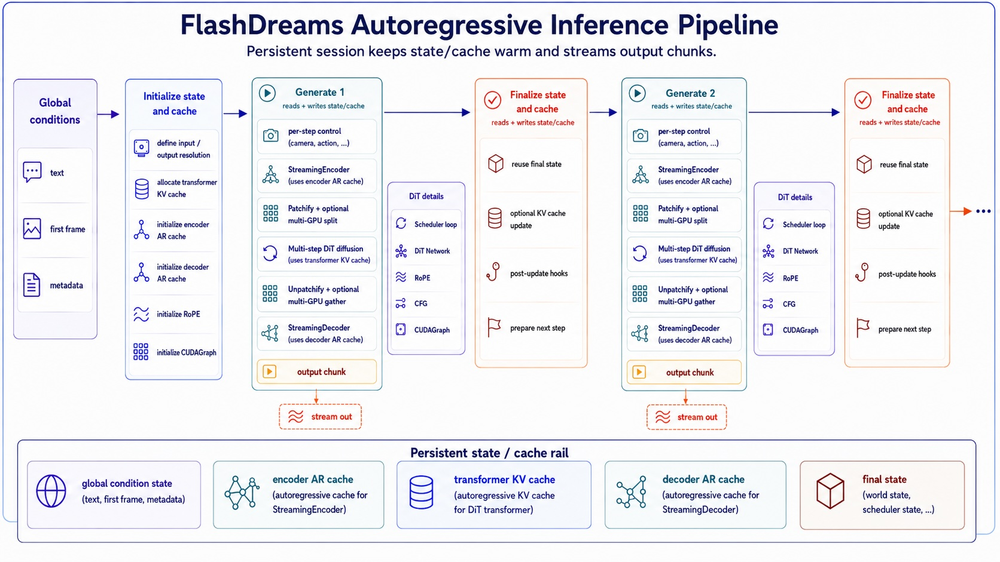

Inference pipeline overview#
This page outlines the major computation flow in the FlashDreams inference pipeline. It should help you understand the core concepts and APIs for building your own model integration, or modifying existing ones.

The key entry point class for the inference pipeline is
StreamInferencePipeline, which defines the
autoregressive generation loop shown in the figure. The persistent state is held in
StreamInferencePipelineCache as a cache object,
which is passed around and updated in each autoregressive step.
from flashdreams.infra.pipeline import (
StreamInferencePipeline,
StreamInferencePipelineCache,
)
pipeline: StreamInferencePipeline = ...
# One-shot encoding on global conditions, then initialize cache/state.
cache: StreamInferencePipelineCache = pipeline.initialize_cache(
text=["a beautiful beach scene"],
image=first_frame,
...,
)
# Autoregressive generation loop.
for autoregressive_index, control in enumerate(controls):
current_output = pipeline.generate(autoregressive_index, cache, input=control)
yield current_output
pipeline.finalize(autoregressive_index, cache)
The code snippet above shows the basic loop. At the top level, you first call initialize_cache()
once with global conditions, such as text prompts and the first frame. Then, for each autoregressive step, call
generate() to produce the current output chunk,
followed by finalize(). This split exists because
finalize() typically handles additional KV
cache updates that are not in the hot path. This allows them to be offloaded to a background thread in many
cases to hide latency.
Inside generate(), the pipeline encodes the
per-step control input, runs the diffusion model’s denoising loop, and decodes the latent chunk into
the final output. The following snippet illustrates this internal flow:
# class StreamInferencePipeline
def generate(
autoregressive_index: int, cache, input=None,
) -> torch.Tensor:
# 1. Convert per-step control into model conditioning.
if input is not None:
input = pipeline.encoder(
input=input,
autoregressive_index=autoregressive_index,
cache=cache.encoder_cache,
)
# 2. Run scheduler loop + DiT flow prediction.
clean_latent, final_state = diffusion_model.generate(
autoregressive_index=autoregressive_index,
cache=cache.transformer_cache,
input=input,
)
cache.final_state = final_state
# 3. Convert latent chunk to output chunk.
if pipeline.decoder is None:
return clean_latent
return pipeline.decoder(
input=clean_latent,
autoregressive_index=autoregressive_index,
cache=cache.decoder_cache,
)
In FlashDreams, these components are wired together using a configuration system. This allows you to build
a customized pipeline by supplying different configurations for the encoder, diffusion model, and decoder.
A typical StreamInferencePipelineConfig is instantiated as follows:
from flashdreams.infra.diffusion.model import DiffusionModelConfig
from flashdreams.infra.diffusion.scheduler.fm import FlowMatchSchedulerConfig
from flashdreams.infra.pipeline import StreamInferencePipelineConfig
# Define your own configs for the encoder, transformer, and decoder.
CustomizedStreamingEncoderConfig = ...
CustomizedTransformerConfig = ...
CustomizedStreamingDecoderConfig = ...
# create a pipeline config
pipeline_config = StreamInferencePipelineConfig(
name="customized-method-name",
encoder=MyStreamingEncoderConfig(),
diffusion_model=DiffusionModelConfig(
transformer=MyTransformerConfig(),
scheduler=FlowMatchSchedulerConfig(),
),
decoder=MyStreamingDecoderConfig(),
)
# then a pipeline can be simply instantiated as follows:
pipeline = pipeline_config.setup().to("cuda").eval()
More details on the config system can be found in Config system.
Examples#
Here is how existing models use this structure:
LingBot-World config: A camera-controlled I2V model that uses the per-step camera encoder.
Self-Forcing config: A pure T2V model that sets
encoder=None, so each rollout starts from noise.OmniDreams config: An I2V video model with a VAE-based causal encoder for HDMap control.
Wan2.1 config: Treats a bidirectional video model as a single-rollout autoregressive model.
For the detailed API documentation, check out Infra. If you are interested in implementing a new model, please refer to Add a new method.